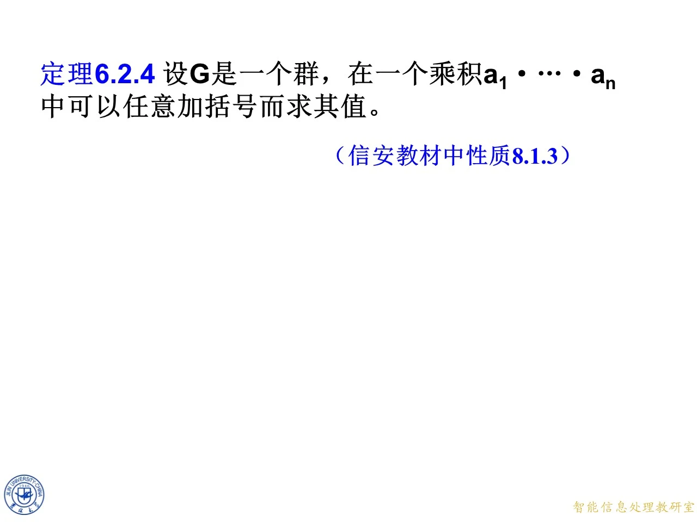

本课讲群中元素的幂运算与乘积的逆元，是第八章群论的第一块基石。课件先用两条定理把乘积的"加括号"与"换次序"问题说清楚，再定义幂并证明三条指数定律，最后给出加法群的记法约定。这些结论是后续学习循环群、群同态与 RSA 等公钥体制中模幂运算的公共基础。同一份课件在本站有三个来源（10月19日授课、第八章-1 原版、10月26日授课），内容完全相同，本讲解按"第八章-1 原版"的页码逐页重构。
定理 6.2.4：群中乘积可以任意加括号
◆ p.284 ｜定理 6.2.4
课件给出定理 6.2.4：设 G G G a 1 ⋅ a 2 ⋅ … ⋅ a n a_1\cdot a_2\cdot \ldots\cdot a_n a 1 ⋅ a 2 ⋅ … ⋅ a n ( a ⋅ b ) ⋅ c = a ⋅ ( b ⋅ c ) (a\cdot b)\cdot c=a\cdot(b\cdot c) ( a ⋅ b ) ⋅ c = a ⋅ ( b ⋅ c )
拓展 （课件外补充）：严格证明用对因子个数 n n n n = 3 n=3 n = 3 n n n k k k n − k n-k n − k a 1 ⋅ … ⋅ a k a_1\cdot\ldots\cdot a_k a 1 ⋅ … ⋅ a k a k + 1 ⋅ … ⋅ a n a_{k+1}\cdot\ldots\cdot a_n a k + 1 ⋅ … ⋅ a n
幂的定义：正指数、零指数与负指数
◆ p.285 ｜a a a n n n n n n a a a a a a n n n a n a^n a n n n n a 0 = 1 a^0=1 a 0 = 1 e e e a − n = ( a n ) − 1 a^{-n}=(a^n)^{-1} a − n = ( a n ) − 1 a − 3 a^{-3} a − 3 a 3 a^3 a 3
◆ p.286 ｜三条定律的总起
本页在幂定义下方给出框架："对于任意整数 m m m n n n
第一指数律：a m ⋅ a n = a m + n a^m\cdot a^n=a^{m+n} a m ⋅ a n = a m + n
◆ p.287 ｜第一指数律的提出
本页先以问句形式抛出（1）：a m ⋅ a n = a^m\cdot a^n= a m ⋅ a n = a a a m m m a a a n n n a a a m + n m+n m + n a a a
◆ p.288 ｜第一指数律
课件给出答案：a m ⋅ a n = a m + n a^m\cdot a^n=a^{m+n} a m ⋅ a n = a m + n m m m n n n a m a^m a m m m m a a a a n a^n a n n n n a a a m + n m+n m + n a a a a m + n a^{m+n} a m + n
◆ p.289 ｜课后思考：负指数情形
本页在定律下方补了一行：课后思考——对 m m m n n n
拓展 （课件外补充）：负指数情形的完整证明。先证一个引理：对任意正整数 r r r a r a^r a r a − r a^{-r} a − r ( a − 1 ) r = a − r (a^{-1})^r=a^{-r} ( a − 1 ) r = a − r a r ⋅ ( a − 1 ) r a^r\cdot(a^{-1})^r a r ⋅ ( a − 1 ) r a r a^r a r a − 1 a^{-1} a − 1 e e e m m m n n n m = − r m=-r m = − r n = − s n=-s n = − s a m ⋅ a n = a − r ⋅ a − s = ( a s ⋅ a r ) − 1 = ( a r + s ) − 1 = a − ( r + s ) = a m + n a^m\cdot a^n=a^{-r}\cdot a^{-s}=(a^s\cdot a^r)^{-1}=(a^{r+s})^{-1}=a^{-(r+s)}=a^{m+n} a m ⋅ a n = a − r ⋅ a − s = ( a s ⋅ a r ) − 1 = ( a r + s ) − 1 = a − ( r + s ) = a m + n m = r ≥ 0 m=r\ge 0 m = r ≥ 0 n = − s n=-s n = − s r ≥ s r\ge s r ≥ s a r = a r − s ⋅ a s a^r=a^{r-s}\cdot a^s a r = a r − s ⋅ a s a r ⋅ a − s = a r − s ⋅ a s ⋅ a − s = a r − s = a m + n a^r\cdot a^{-s}=a^{r-s}\cdot a^s\cdot a^{-s}=a^{r-s}=a^{m+n} a r ⋅ a − s = a r − s ⋅ a s ⋅ a − s = a r − s = a m + n r < s r<s r < s a s = a s − r ⋅ a r a^s=a^{s-r}\cdot a^r a s = a s − r ⋅ a r a − s = ( a r ) − 1 ⋅ ( a s − r ) − 1 a^{-s}=(a^r)^{-1}\cdot\bigl(a^{s-r}\bigr)^{-1} a − s = ( a r ) − 1 ⋅ ( a s − r ) − 1 a r ⋅ a − s = a r ⋅ ( a r ) − 1 ⋅ ( a s − r ) − 1 = ( a s − r ) − 1 = a − ( s − r ) = a m + n a^r\cdot a^{-s}=a^r\cdot(a^r)^{-1}\cdot\bigl(a^{s-r}\bigr)^{-1}=\bigl(a^{s-r}\bigr)^{-1}=a^{-(s-r)}=a^{m+n} a r ⋅ a − s = a r ⋅ ( a r ) − 1 ⋅ ( a s − r ) − 1 = ( a s − r ) − 1 = a − ( s − r ) = a m + n a 0 = e a^0=e a 0 = e
◆ p.290 ｜第二指数律的提出
本页继续以问句形式抛出（2）：( a m ) n = (a^m)^n= ( a m ) n =
第二指数律：( a m ) n = a m n (a^m)^n=a^{mn} ( a m ) n = a mn
◆ p.291 ｜第二指数律
课件给出答案：( a m ) n = a m n (a^m)^n=a^{mn} ( a m ) n = a mn m m m n n n ( a m ) n (a^m)^n ( a m ) n n n n a m a^m a m n n n m m m m + m + … + m = m n m+m+\ldots+m=mn m + m + … + m = mn
◆ p.292 ｜第二指数律的完整陈述
本页给（2）正式冠名"第二指数律"：( a m ) n = a m n (a^m)^n=a^{mn} ( a m ) n = a mn a a a
◆ p.293 ｜第三条：乘积的逆元
本页揭示（3）：对群中任意元素 a a a b b b ( a ⋅ b ) − 1 = b − 1 ⋅ a − 1 (a\cdot b)^{-1}=b^{-1}\cdot a^{-1} ( a ⋅ b ) − 1 = b − 1 ⋅ a − 1 b − 1 ⋅ a − 1 b^{-1}\cdot a^{-1} b − 1 ⋅ a − 1 a − 1 ⋅ b − 1 a^{-1}\cdot b^{-1} a − 1 ⋅ b − 1
拓展 （课件外补充）：第二指数律的负指数情形。设 n = − t < 0 n=-t<0 n = − t < 0 ( a m ) n = ( ( a m ) t ) − 1 = ( a m t ) − 1 = a − m t = a m n (a^m)^n=\bigl((a^m)^t\bigr)^{-1}=(a^{mt})^{-1}=a^{-mt}=a^{mn} ( a m ) n = ( ( a m ) t ) − 1 = ( a m t ) − 1 = a − m t = a mn m = 0 m=0 m = 0 n = 0 n=0 n = 0 a 0 = e a^0=e a 0 = e
乘积取逆的逐帧证明（p.294-303）
◆ p.294 ｜结论强调
本页把（3）( a ⋅ b ) − 1 = b − 1 ⋅ a − 1 (a\cdot b)^{-1}=b^{-1}\cdot a^{-1} ( a ⋅ b ) − 1 = b − 1 ⋅ a − 1
◆ p.295 ｜证明思路
课件写明证明思路：要证明 ( a ⋅ b ) − 1 = b − 1 ⋅ a − 1 (a\cdot b)^{-1}=b^{-1}\cdot a^{-1} ( a ⋅ b ) − 1 = b − 1 ⋅ a − 1 b − 1 ⋅ a − 1 b^{-1}\cdot a^{-1} b − 1 ⋅ a − 1 a ⋅ b a\cdot b a ⋅ b b − 1 ⋅ a − 1 b^{-1}\cdot a^{-1} b − 1 ⋅ a − 1 ( a ⋅ b ) − 1 (a\cdot b)^{-1} ( a ⋅ b ) − 1
◆ p.296 ｜只需双侧乘积为 1
本页列出两个待验证的等式框架：( b − 1 ⋅ a − 1 ) ⋅ ( a ⋅ b ) = 1 (b^{-1}\cdot a^{-1})\cdot(a\cdot b)=1 ( b − 1 ⋅ a − 1 ) ⋅ ( a ⋅ b ) = 1 ( a ⋅ b ) ⋅ ( b − 1 ⋅ a − 1 ) = 1 (a\cdot b)\cdot(b^{-1}\cdot a^{-1})=1 ( a ⋅ b ) ⋅ ( b − 1 ⋅ a − 1 ) = 1
◆ p.297-298 ｜左乘验证
第一个等式的计算过程为：
( b − 1 ⋅ a − 1 ) ⋅ ( a ⋅ b ) = b − 1 ⋅ ( a − 1 ⋅ a ) ⋅ b = b − 1 ⋅ 1 ⋅ b = b − 1 ⋅ b = 1. \bigl(b^{-1}\cdot a^{-1}\bigr)\cdot\bigl(a\cdot b\bigr)=b^{-1}\cdot\bigl(a^{-1}\cdot a\bigr)\cdot b=b^{-1}\cdot 1\cdot b=b^{-1}\cdot b=1. ( b − 1 ⋅ a − 1 ) ⋅ ( a ⋅ b ) = b − 1 ⋅ ( a − 1 ⋅ a ) ⋅ b = b − 1 ⋅ 1 ⋅ b = b − 1 ⋅ b = 1. a − 1 a^{-1} a − 1 a a a a − 1 ⋅ a = 1 a^{-1}\cdot a=1 a − 1 ⋅ a = 1 1 ⋅ b = b 1\cdot b=b 1 ⋅ b = b b − 1 ⋅ b = 1 b^{-1}\cdot b=1 b − 1 ⋅ b = 1 a a a b b b
◆ p.299 ｜右乘验证开始
第二个等式 ( a ⋅ b ) ⋅ ( b − 1 ⋅ a − 1 ) (a\cdot b)\cdot(b^{-1}\cdot a^{-1}) ( a ⋅ b ) ⋅ ( b − 1 ⋅ a − 1 ) a ⋅ ( b ⋅ b − 1 ) ⋅ a − 1 a\cdot\bigl(b\cdot b^{-1}\bigr)\cdot a^{-1} a ⋅ ( b ⋅ b − 1 ) ⋅ a − 1 b ⋅ b − 1 b\cdot b^{-1} b ⋅ b − 1
◆ p.300-303 ｜右乘验证完成与结论
课件继续写出：
a ⋅ ( b ⋅ b − 1 ) ⋅ a − 1 = a ⋅ 1 ⋅ a − 1 = a ⋅ a − 1 = 1 , a\cdot\bigl(b\cdot b^{-1}\bigr)\cdot a^{-1}=a\cdot 1\cdot a^{-1}=a\cdot a^{-1}=1, a ⋅ ( b ⋅ b − 1 ) ⋅ a − 1 = a ⋅ 1 ⋅ a − 1 = a ⋅ a − 1 = 1 , b ⋅ b − 1 = 1 b\cdot b^{-1}=1 b ⋅ b − 1 = 1 1 ⋅ a − 1 = a − 1 1\cdot a^{-1}=a^{-1} 1 ⋅ a − 1 = a − 1 a ⋅ a − 1 = 1 a\cdot a^{-1}=1 a ⋅ a − 1 = 1 b − 1 ⋅ a − 1 b^{-1}\cdot a^{-1} b − 1 ⋅ a − 1 a ⋅ b a\cdot b a ⋅ b ( a ⋅ b ) − 1 = b − 1 ⋅ a − 1 (a\cdot b)^{-1}=b^{-1}\cdot a^{-1} ( a ⋅ b ) − 1 = b − 1 ⋅ a − 1
拓展 （课件外补充）：把结论连续使用可得一般公式 ( a 1 ⋅ a 2 ⋅ … ⋅ a r ) − 1 = a r − 1 ⋅ … ⋅ a 2 − 1 ⋅ a 1 − 1 (a_1\cdot a_2\cdot \ldots\cdot a_r)^{-1}=a_r^{-1}\cdot \ldots\cdot a_2^{-1}\cdot a_1^{-1} ( a 1 ⋅ a 2 ⋅ … ⋅ a r ) − 1 = a r − 1 ⋅ … ⋅ a 2 − 1 ⋅ a 1 − 1 ( a b c ) − 1 = c − 1 b − 1 a − 1 (abc)^{-1}=c^{-1}b^{-1}a^{-1} ( ab c ) − 1 = c − 1 b − 1 a − 1 a ⋅ b a\cdot b a ⋅ b ( ( a b ) ⋅ c ) − 1 = c − 1 ⋅ ( a b ) − 1 \bigl((ab)\cdot c\bigr)^{-1}=c^{-1}\cdot(ab)^{-1} ( ( ab ) ⋅ c ) − 1 = c − 1 ⋅ ( ab ) − 1 ( a b ) − 1 (ab)^{-1} ( ab ) − 1
三条定律汇总与教材性质对应
◆ p.304 ｜性质 8.1.6 与性质 8.1.4
本页把三条定律完整重列并标注教材出处：第一指数律 a m ⋅ a n = a m + n a^m\cdot a^n=a^{m+n} a m ⋅ a n = a m + n ( a m ) n = a m n (a^m)^n=a^{mn} ( a m ) n = a mn ( a ⋅ b ) − 1 = b − 1 ⋅ a − 1 (a\cdot b)^{-1}=b^{-1}\cdot a^{-1} ( a ⋅ b ) − 1 = b − 1 ⋅ a − 1
定理 6.2.5：Abel 群中因子次序可任意颠倒
◆ p.305 ｜定理 6.2.5
课件给出定理 6.2.5：在一个 Abel 群 ( G , ⋅ ) (G,\cdot) ( G , ⋅ )
拓展 （课件外补充）：证明思路是对任意一个重排做有限次"相邻因子交换"：每次相邻交换由交换律保证值不变（括号结构由定理 6.2.4 处理），而任何排列都可由有限次相邻交换实现，故任意重排不改变乘积值。条件不能省：在三次对称群 S 3 S_3 S 3 a = ( 1 2 ) a=(1\,2) a = ( 1 2 ) b = ( 2 3 ) b=(2\,3) b = ( 2 3 ) a ⋅ b a\cdot b a ⋅ b 1 ↦ 2 1\mapsto 2 1 ↦ 2 2 ↦ 3 2\mapsto 3 2 ↦ 3 3 ↦ 1 3\mapsto 1 3 ↦ 1 ( 1 2 3 ) (1\,2\,3) ( 1 2 3 ) b ⋅ a b\cdot a b ⋅ a 1 ↦ 3 1\mapsto 3 1 ↦ 3 2 ↦ 1 2\mapsto 1 2 ↦ 1 3 ↦ 2 3\mapsto 2 3 ↦ 2 ( 1 3 2 ) (1\,3\,2) ( 1 3 2 )
第三指数律：只在 Abel 群中成立
◆ p.306 ｜第三指数律
本页回到三条定律的总框架，并补上一条新结论：可以证明，在 Abel 群中第三指数律成立：
( a ⋅ b ) m = a m ⋅ b m , m 为任意整数 . (a\cdot b)^m=a^m\cdot b^m,\quad m\ \text{为任意整数}. ( a ⋅ b ) m = a m ⋅ b m , m 为任意整数 . ( a b ) m (ab)^m ( ab ) m m m m a b ab ab a b a b ⋯ a b abab\cdots ab abab ⋯ ab a a a b b b
拓展 （课件外补充）：具体反例仍在 S 3 S_3 S 3 a = ( 1 2 ) a=(1\,2) a = ( 1 2 ) b = ( 2 3 ) b=(2\,3) b = ( 2 3 ) m = 2 m=2 m = 2 a 2 = b 2 = e a^2=b^2=e a 2 = b 2 = e a 2 ⋅ b 2 = e a^2\cdot b^2=e a 2 ⋅ b 2 = e ( a b ) 2 (ab)^2 ( ab ) 2 1 ↦ 3 1\mapsto 3 1 ↦ 3 2 ↦ 1 2\mapsto 1 2 ↦ 1 3 ↦ 2 3\mapsto 2 3 ↦ 2 ( 1 3 2 ) (1\,3\,2) ( 1 3 2 ) ( a b ) 2 ≠ a 2 b 2 (ab)^2\ne a^2 b^2 ( ab ) 2 = a 2 b 2 ( a b ) 2 = a 2 b 2 (ab)^2=a^2b^2 ( ab ) 2 = a 2 b 2 a b a b = a a b b abab=aabb abab = aabb b a = a b ba=ab ba = ab ( a b ) − m (ab)^{-m} ( ab ) − m ( ( a b ) m ) − 1 \bigl((ab)^m\bigr)^{-1} ( ( ab ) m ) − 1
加法群的记法约定
◆ p.307 ｜加法群的默认规定
课件宣布记法约定：今后如果没有特殊说明，写法上形如 ( G , + ) (G,+) ( G , + ) ( G , + ) (G,+) ( G , + ) 0 0 0 a + 0 = a a+0=a a + 0 = a a a a − a -a − a a + ( − a ) = 0 a+(-a)=0 a + ( − a ) = 0 n a na na a + … + a a+\ldots+a a + … + a n n n a a a a n a^n a n
◆ p.308 ｜指数定律的加法形式
据以上规定，三个指数定律在加法群中表现为：
( m + n ) a = m a + n a , m ( a + b ) = m a + m b , m ( n a ) = ( m n ) a . (m+n)a=ma+na,\quad m(a+b)=ma+mb,\quad m(na)=(mn)a. ( m + n ) a = ma + na , m ( a + b ) = ma + mb , m ( na ) = ( mn ) a . m m m n n n m a ma ma Z 6 \mathbb{Z}_6 Z 6 4 ⋅ 2 = 2 + 2 + 2 + 2 ≡ 2 ( m o d 6 ) 4\cdot 2=2+2+2+2\equiv 2\pmod 6 4 ⋅ 2 = 2 + 2 + 2 + 2 ≡ 2 ( mod 6 ) m ( n a ) = ( m n ) a m(na)=(mn)a m ( na ) = ( mn ) a m = 3 m=3 m = 3 n = 2 n=2 n = 2 a = 2 a=2 a = 2 3 ⋅ ( 2 ⋅ 2 ) = 3 ⋅ 4 = 12 ≡ 0 ( m o d 6 ) 3\cdot(2\cdot 2)=3\cdot 4=12\equiv 0\pmod 6 3 ⋅ ( 2 ⋅ 2 ) = 3 ⋅ 4 = 12 ≡ 0 ( mod 6 ) ( 3 ⋅ 2 ) ⋅ 2 = 6 ⋅ 2 ≡ 0 ( m o d 6 ) (3\cdot 2)\cdot 2=6\cdot 2\equiv 0\pmod 6 ( 3 ⋅ 2 ) ⋅ 2 = 6 ⋅ 2 ≡ 0 ( mod 6 )
乘法群与加法群的符号对照
◆ p.309 ｜符号对照表
本页用一张表总结两种记法的对应关系：运算符号，乘法群用乘号、星号、圆圈 ∘ \circ ∘ + + + 1 1 1 0 0 0 a − 1 a^{-1} a − 1 − a -a − a n n n a a a a n a^n a n n a na na a n = e a^n=e a n = e n a = 0 na=0 na = 0
◆ p.310 ｜结束页
本页为"End"过渡页，标志本段课件结束，无实质内容（p.310 为过渡页）。
同一课件的重复收录说明
◆ p.731-757 ｜10月19日授课页码对照
清单中"10月19日授课"来源（第 731 至 757 页）与上面讲解的"第八章-1 原版 / 10月26日授课"（第 284 至 310 页）是同一份课件的重复收录：两边逐页图像相同，页码恒差 447（例如本课第 284 页定理 6.2.4 即 10月19日授课的第 731 页，第 310 页结束页即第 757 页）。因此不重复讲解，上面各页块的内容对 731-757 全范围一律适用；阅读时若遇到 731-757 的页码引用，减去 447 即可查到对应讲解。

课件原图 · 10月19日授课 · 第 731 页 查看前后已收录原页 →